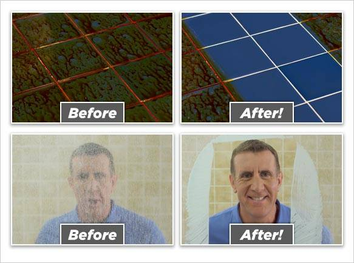

The turbo scrub is a useful tool for removing any grub from your hub (counters, tables, sinks, we do em' all). It cleans
better than any other device you've ever had. It lasts you twice as long as a Mr.Clean magic eraser just check it out for yourself with our demo video; Demo video
or our preview images below:
